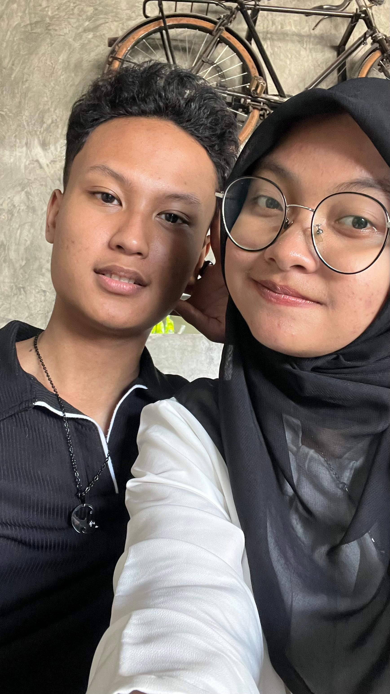
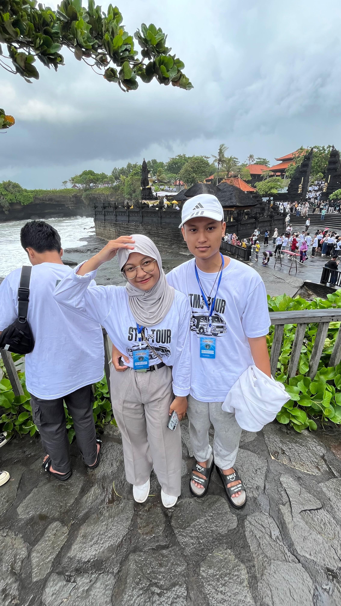
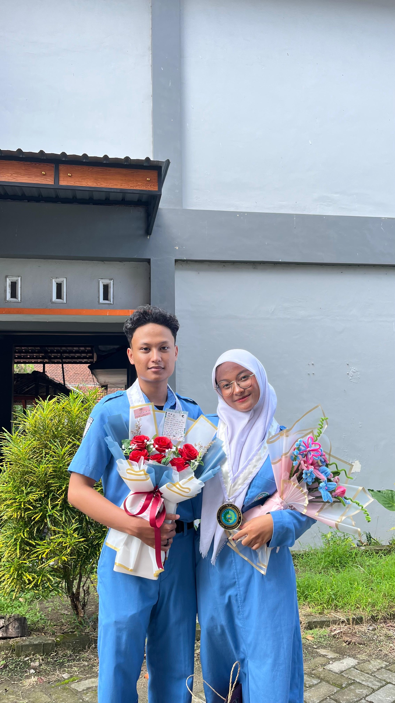

Happy Birthday
Selamat ulang tahun, Diana. Di hari spesialmu ini, aku ingin mempersembahkan sesuatu yang sederhana namun penuh makna. Website ini aku buat sebagai ruang kecil yang akan selalu menyimpan kenangan-kenangan indah kita — tempat di mana tawa kita, doa-doa yang kita panjatkan, dan cinta yang tak pernah habis bisa hidup selamanya.




I Love You
Hari ini ulang tahun Diana —
dan seperti setiap tahun, aku nggak cuma ngerayain Diana bertambah usia, tapi juga bersyukur karena Diana pernah (dan masih) jadi bagian dari hariku.
Semoga di umur baru ini, semua doa-doa yang Diana simpan dalam diam bisa satu per satu datang.
Semoga Diana sehat, dikuatkan hatinya, dan dikelilingi kasih sayang yang tulus, dari mana pun itu datang.
Dan, ada satu hal yang selalu aneh tapi nyata: Setiap kali aku dengar 2 lagu ini pasti langsung teringat diana, aku tidak tau itu lagu favoritnya diana atau bukan tapi karena Diana, lagu itu jadi salah satu lagu yang paling berkesan buatku.
"Excuse me if I spoke too soon
My eyes have always followed you around the room..."
— If I Had a Gun
Kalimat itu selalu nyangkut. Karena ya... sejak awal, entah gimana caranya, mataku memang selalu nyari Diana duluan.
Dan tanpa Diana sadari, Diana udah jadi seseorang yang aku sayangi dan kagumi diam-diam.
"She says that I’m crazy, but I don’t let it faze me
Taste me, baby, take me as you please…”
— Take Me As You Please
Aku nggak pernah nuntut banyak dari Diana.
Aku cuma pengen jadi diri sendiri, dan diterima. Apa adanya. Sama seperti aku nerima Diana.
Nggak banyak yang bisa aku kasih hari ini, tapi aku selalu berusaha jadi diri sendiri di depan Diana — dan berharap itu cukup.
Selamat ulang tahun, sayang. Mari kita buat lebih banyak kenangan, tawa, dan mimpi bersama.
Di hari bahagiamu ini, semoga semua cinta yang kamu berikan ke dunia kembali padamu dengan berkali lipat.
2 lagu ini


Doaku Untukmu

Galeri Foto